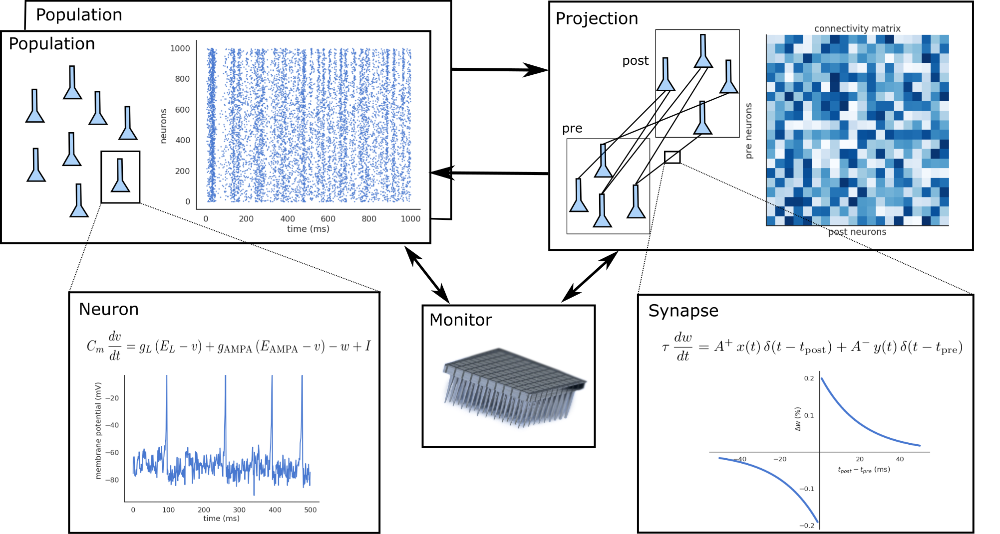
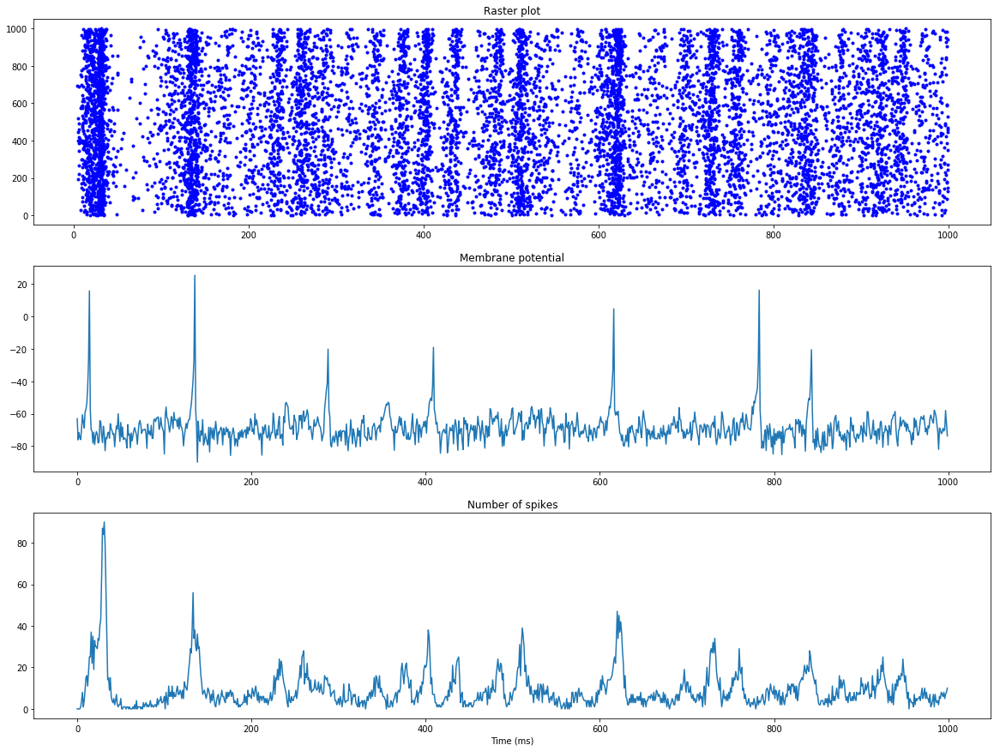

ANNarchy (Artificial Neural Networks architect)
Neuro-computational models are different from classical neural networks (deep learning) in many aspects:
- The complexity of the neurons, whose activity is governed by one or several differential equations instead of a simple weighted sum.
- The complexity and diversity of the learning rules (synaptic plasticity), compared to gradient descent.
- The size of the networks needed to simulate significant parts of the brain.
- The huge diversity of models, architectures, frameworks used by researchers in computational neuroscience.
The increasing size of such networks asks for efficient parallel simulations, using distributed systems (OpenMP, MPI) or GPUs (CUDA). However, computational neuroscientists cannot be expected to be also experts in parallel computing. There is a need for a general-purpose neuro-simulator, with an easy but flexible interface allowing to define a huge variety of models, but which is internally efficient and allows for fast parallel simulations on various hardwares.
Over many years, we have developed ANNarchy (Artificial Neural Networks architect), a parallel simulator for distributed rate-coded or spiking neural networks. The definition of the models is made in Python, but the library generates optimized C++ code to actually run the simulation on parallel hardware, using either openMP or CUDA. The current stable version is 4.7 and is released under the GNU GPL v2 or later.
The code is available at:
https://github.com/ANNarchy/ANNarchy
The documentation is available at:
Core principles
ANNarchy separates the description of a neural network from its simulation. The description is declared in a Python script, offering high flexibility and readability of the code, and allowing to use the huge ecosystem of scientific libraries available with Python (Numpy, Scipy, Matplotlib…). Using Python furthermore reduces the programming effort to a minimum, letting the modeller concentrate on network design and data analysis.

A neural network is defined as a collection of interconnected populations of neurons. Each population comprises a set of similar artificial neurons (rate-coded or spiking point-neurons), whose activity is ruled by one or many ordinary differential equations. The activity of a neuron depends on the activity of other neurons through synapses, whose strength can evolve with time depending on pre- or post-synaptic activities (synaptic plasticity). Populations are interconnected with each other through projections, which contain synapses between two populations.
ANNarchy provides a set of classical neuron or synapse models, but also allows the definition of specific models. The ordinary differential equations (ODE) governing neural or synaptic dynamics have to be specified by the modeler. Contrary to other simulators (except Brian) which require to code these modules in a low-level language, ANNarchy provides a mathematical equation parser which can generate optimized C++ code depending on the chosen parallel framework. Bindings from C++ to Python are generated thanks to Cython (C-extensions to Python), which is a static compiler for Python. These bindings allow the Python script to access all data generated by the simulation (neuronal activity, connection weights) as if they were simple Python attributes. However, the simulation itself is independent from Python and its relatively low performance.
Example of a pulse-coupled network of Izhikevich neurons
To demonstrate the simplicity of ANNarchy’s interface, let’s focus on the “Hello, World!” of spiking networks: the pulse-coupled network of Izhikevich neurons (Izhikevich, 2003). It can be defined in ANNarchy as:
from ANNarchy import *
# Create the excitatory and inhibitory population
pop = Population(geometry=1000, neuron=Izhikevich)
Exc = pop[:800] ; Inh = pop[800:]
# Set the population parameters
re = np.random.random(800) ; ri = np.random.random(200)
Exc.noise = 5.0 ; Inh.noise = 2.0
Exc.a = 0.02 ; Inh.a = 0.02 + 0.08 * ri
Exc.b = 0.2 ; Inh.b = 0.25 - 0.05 * ri
Exc.c = -65.0 + 15.0 * re**2 ; Inh.c = -65.0
Exc.d = 8.0 - 6.0 * re**2 ; Inh.d = 2.0
Exc.v = -65.0 ; Inh.v = -65.0
Exc.u = Exc.v * Exc.b ; Inh.u = Inh.v * Inh.b
# Create the projections
exc_proj = Projection(pre=Exc, post=pop, target='exc')
exc_proj.connect_all_to_all(weights=Uniform(0.0, 0.5))
inh_proj = Projection(pre=Inh, post=pop, target='inh')
inh_proj.connect_all_to_all(weights=Uniform(0.0, 1.0))
# Compile
compile()
# Start recording the spikes in the network to produce the plots
M = Monitor(pop, ['spike', 'v'])
# Simulate 1 second
simulate(1000.0, measure_time=True)
# Retrieve the spike recordings and the membrane potential
spikes = M.get('spike')
v = M.get('v')
# Compute the raster plot
t, n = M.raster_plot(spikes)
# Compute the population firing rate
fr = M.histogram(spikes)
# Plot the results
import matplotlib.pyplot as plt
ax = plt.subplot(3,1,1)
ax.plot(t, n, 'b.', markersize=1.0)
ax = plt.subplot(3,1,2)
ax.plot(v[:, 15])
ax = plt.subplot(3,1,3)
ax.plot(fr)
plt.show()